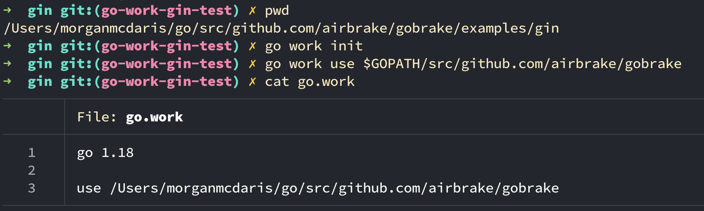

class: center, middle # Go workspaces One of the other `1.18` features... that's NOT generics. --- # What is the go workspace feature? - It's a part of the go module system for specifying dependencies. - A quick way to use(and modify) a **local version of a package**. - Adds some new `go` cli commands! -- #### How do you use it? There are a few new additions to the go tooling commands but the main ones to get up and running are `go work init` and `go work use`. ```bash go work init go use PATH_TO_A_LOCAL_PKG ``` -- ### More on the use directive - The argument to `go use` tells the project in your current directory to use the local version of some package with a relative or absolute path. - The argument to the use directive can be any directory with a go.mod file. --- # What are workspaces good for? -- #### Create Fast feedback loops Workspaces make it easy to quickly explore and expand on existing packages. You can quickly set up a brand new feedback loop locally with a new tool you want to try to modify to fit your needs. -- #### Easy open source spikes It's become easier to clone or fork a project and try out ideas. Workspaces decrease the friction of experimenting with interesting projects. Workspaces have the potential to foster new open source contributors by dropping the barrier to entry a bit. -- #### Get early validation With workspaces it's possible to create quick prototypes and share them early with your team or community. This could be an early concept check before investing larger amounts of time into testing when you don't know if the idea will be welcomed with open arms. ??? You should reach for workspaces any time you say to yourself: "Oh! this would be so cool if I could do X"! and want an easy way to try out your idea. --- # Let's use it! When I read the changelog for 1.18 and saw workspaces the first thing I thought of was using it for gobrake development. It seemed like a great way to run one of our example apps and make it use the local version of gobrake instead of the most recent version pulled in from a remote. #### The Gin example app! I decided to try it out with our gin example app. Here's what the app looks like when you run it: --- # It's running! Okay! It's running, it's listening. It's using a remote version of gobrake from github. Great for an example app but let's make some tweaks! Our goal is to see the notifier config's project id and project key when the server is started, and let's make it fancy with the lipgloss pkg from charm. -- - Goals, when gin starts... - Shows project ID - Shows project Key - FANCY! --- # Workspace setup So let's instruct the gin example app to use the local version of Gobrake in a workspace. We'll init the work file and use the local version of gobrake. --  -- Behind the scenes I've made some updates to my local gobrake: - Added a new public mehod to expose the notifier config. - This allowed me to grab project id and key. - Added the lipgloss package so we can be fancy. - Used the lipgloss package in the gobrake gin middleware so it runs when we start our server. --- # Let's run it! Now that we have configured our `go.work` file any gobrake package references will point to our modified local version of gobrake. `go.work` files take precedence over anything in the `go.mod` file. -- **Violla!** We now have a new friendly message for gin users, Served ala workspace. --- # Wrapping up! - After you are done experimenting you can easily remove the `go.work` file when you want your project to use the go.mod version of the package again. - If you ever want to disable workspaces for a single run you can do so by prefixing your go command with `GOWORK=off`. .e.g. ```bash GOWORK=off go run main.go ``` -- # Thanks for listening!